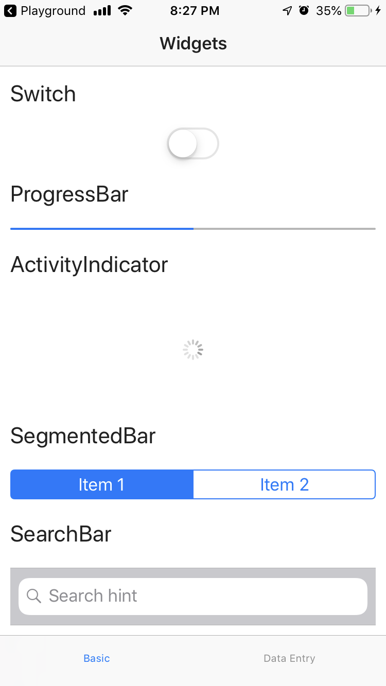

NativeScript Infinity Gauntlet
Mobile Endgame
Thank you sponsors!!!
About Me
NativeScript developer @FocustApps
Open Source Contributor
- NS Market Samples
- GitHub Issues
- NS Community Slack

Agenda
- What is NativeScript?
- How it works
- Why NativeScript?
- Ways to get started
- Resources
Space
- Framework to build truly native cross platform mobile apps
- Open Source, backed by Progress
- Multiple flavors (Vanilla, Angular, and Vue)
-
Wait... but truly native apps?
- Access to native objc/Java classes
- Provides native performance
- Enables the same customization as native
Reality
Power
- 100% sharable code across platforms (Android and iOS)
- Can use existing web development knowledge
-
Allows you to use existing libraries
- NPM (Node, some exclusions apply 😁)
- CocoaPods (iOS)
- Android Arsenal (Android)
Mind
NativeScript Playground
- Web based IDE
- Get started quickly and test on iOS and Android devices
NativeScript Sidekick
- Tool to accelerate building NS apps with a UI for creating, building, and testing NativeScript apps
- GUI for the CLI
- Lets you use your preferred IDE
NativeScript CLI
- Configure your local machine
- Richest development experience
Time

Soul
